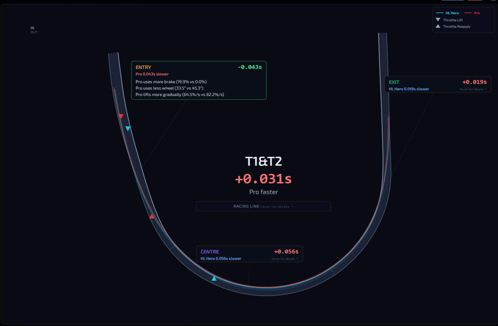

Click-through Telemetry Access™ in action
See every difference. Know exactly what to change.
Compare your times to faster drivers to improve your performance or evaluate differences among teammates.
They prioritize long-run speed. Other telemetry software compares your hotlap vs. a reference lap — but hot-lap heroes fade across a run. Our advanced analyses identify key driver differences that account for pace differences across an entire run. Jump to any lap to compare both drivers' telemetry via
Click-through Telemetry Access™
Machine learning finds the inputs that distinguish the two drivers — consistent, measurable, actionable.
Analysis indicates driver signatures are distinct and the differences are consistent lap to lap.
The #1 distinguishing input is Peak Brake at T3&T4 (Entry): Pro averages 17.7% vs 1.0%.
Multiple top differences cluster at T1&T2 (3 of top 5), reinforcing it as the key zone where technique diverges most.
Steering differences appear in 3 of the top 5 inputs — this is fundamentally a steering/line difference that cascades into heat and grip consequences.
| # | Importance | Input | Corner | Phase | HL Hero | Pro | Δ | Consistency |
|---|---|---|---|---|---|---|---|---|
| 1 | Peak Brake | T3&T4 | Entry | 0.0% | 17.7% | 17.7% | 14/14 (100%) | |
| 2 | Steering | T1&T2 | Centre | 53.0° | 35.4° | 17.6° | 14/14 (100%) | |
| 3 | Peak Brake | T1&T2 | Entry | 0.0% | 19.9% | 19.9% | 14/14 (100%) | |
| 4 | Steering | T3&T4 | Centre | 52.4° | 37.4° | 15.0° | 14/14 (100%) | |
| 5 | Peak Steering | T1&T2 | Entry | 45.3° | 33.5° | 11.8° | 14/14 (100%) |

The full coaching breakdown — distilled into three sections you can act on immediately — followed by a detailed coaching report.
| Metric | HL Hero (Current) | Pro (Target) | Gap |
|---|---|---|---|
| Avg Lap Time | 23.843s | 23.798s | +0.044s |
| Avg RF Temp | 272°F | 207°F | +65°F |
| Avg RR Temp | 268°F | 241°F | +27°F |
| Late-Run Fade | +1.139s | +0.674s | +0.465s |
| Gap Q1 → Q4 | −0.249s | → | +0.227s (+0.476s growth) |
HL Hero's right front tires run 42.3°F hotter on average.
HL Hero runs hotter across all four tires — 31.3°F on the fronts, 15.1°F on the rears.
HL Hero's right front temps rise 36.9°F from Q1 to Q4; Pro's right rear temps rise 29.7°F from Q1 to Q4.
Identifies laps where tire temps spike above trend — with driver input comparison on hot vs cool laps and "What Should Change" recommendations.
Links driver inputs (steering, throttle, braking) to tire temperatures to grip events to lap time. The full cause-and-effect story.
Every understeer, oversteer, and wheelspin event — detected by machine learning, verified against tire data, with causal analysis showing exactly what the driver did to trigger it.
| LAP | S→P | P→R | TOTAL | @ | PHASE | RR°F | RRΔ | THR | THRΔ | STEER | LINE | PEAK EXCESS |
||
|---|---|---|---|---|---|---|---|---|---|---|---|---|---|---|
| 1 | 0.60 | 0.35 | 0.95 s | Start | 35.7% | Exit | 229° | +30.8° | 100% | 0 %/s | 14.4° | 23% | +5.6 mph | |
| 10 MPH | 38.2% | Exit | 222° | +24.2° | 100% | 0 %/s | -4.2° | 23% | ||||||
| Peak | 38.2% | Exit | 222° | +24.2° | 100% | 0 %/s | -4.2° | 23% | ||||||
| Recovery | 39.7% | Exit | 218° | +19.9° | 100% | 0 %/s | -6.0° | 23% |
Every dimension of the comparison — from lap times to tire heat to grip events — broken out into dedicated analysis views with detailed coaching.
The complete overview — who was faster, biggest driving differences, handling comparison, outlier laps, and coaching recommendations.
A full AI-generated comparison report with executive summary, coaching targets, and measurement benchmarks. Copy or save as PDF.
Quartered gap progression, zone-by-zone time loss, per-lap charts by sector — with multi-tab coaching analysis.
GPS-based line comparison with overhead view, spaghetti plots, V-angles, and track position percentages at every phase.
All four tire temperatures across the full run — see who runs hotter, where the heat builds, and how it correlates to pace.
Heat spike detection, causal analysis linking driver inputs to thermal load, and specific recommendations to reduce tire abuse.
What inputs predict faster laps for each driver — with sustainability checks and side-by-side "What Should Change."
ML-verified understeer and oversteer events with severity, worst laps, causal chains, and telemetry comparison links.
Event-by-event wheelspin analysis with phases, tire temps, throttle data, and track position for every occurrence.
Driver Comparison turns "they're faster than me" into a step-by-step plan to close the gap. Every input. Every corner. Every answer.
Try GripIQ